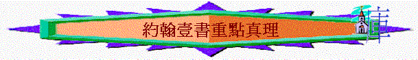

∼若我們將約翰壹書一些重點真理/字眼集中研究時，令我們發現更多寶貴真理
＊列出「永生」字眼
[約壹
2:25]: 主所應許我們的就是永生。
[約壹
3:15]: 凡恨他弟兄的，就是殺人的；你們曉得凡殺人的，沒有永生存在他裡面。
[約壹
5:11]: 這見證就是神賜給我們永生；這永生也是在他兒子裡面。
[約壹
5:13]: 我將這些話寫給你們信奉神兒子之名的人，要叫你們知道自己有永生。
[約壹
5:20]: 我們也知道，神的兒子已經來到，且將智慧賜給我們，使我們認識那位真實的，我們也在那位真實的裡面，就是在他兒子耶穌基督裡面。這是真神，也是永生。
一.永生
1.永生包含甚麼？(what)
A.神的兒子
「人有了神的兒子就有生命，沒有神的兒子就沒有生命。」5:12
「我將這些話寫給你們信奉神兒子之名的人，要叫你們知道自己有永生。」5:20
∼耶穌就是神的兒子，祂也是永遠的生命，祂是真神，也是永生；人有了神的兒子就有生命，就有永生
B.從神而生
「凡信耶穌是基督的，都是從神而生，凡愛生他之神的，也必愛從神生的。」5:1
C.永遠生命
「（這生命已經顯現出來，我們也看見過，現在又作見證，將原與父同在、且顯現與我們那永遠的生命、傳給你們。）」1:2
D.住在神裡
「凡認耶穌為神兒子的，神就住在他裡面，他也住在神裡面。」4:15
E.與神相交
「我們將所看見、所聽見的傳給你們，使你們與我們相交。我們乃是與父並他兒子耶穌基督相交的。」1:3
「我們若說是與神相交，卻仍在黑暗裡行，就是說謊話，不行真理了。」1:6
F.認識真神
「認識你獨一的真神，並且認識你所差來的耶穌基督，這就是永生。」約17:3
「父老啊，我寫信給你們，因為你們認識那從起初原有的。少年人哪，我寫信給你們，因為你們勝了那惡者。小子們哪，我曾寫信給你們，因為你們認識父。」約壹2:13
2.如何知道自己有永生？(how)
A.遵守主道
「凡遵守主道的，愛神的心在他裡面實在是完全的。從此我們知道我們是在主裡面。」2:5
B.行出公義
「你們若知道他是公義的，就知道凡行公義之人都是他所生的。」2:29
C.有神的靈
「神將他的靈賜給我們，從此就知道我們是住在他裡面，他也住在我們裡面。」4:13
D.信神兒子
「我將這些話寫給你們信奉神兒子之名的人，要叫你們知道自己有永生。」5:13
E.必不犯罪
「我們知道凡從神生的，必不犯罪，從神生的，必保守自己（有古卷：那從神生的必保護他），那惡者也就無法害他。」5:18
F.保守自己
「我們知道凡從神生的，必不犯罪，從神生的，必保守自己（有古卷：那從神生的必保護他），那惡者也就無法害他。」5:18
二.住在主裡面
＊列出「住在主裡面」字眼
[約壹
2:6]: 人若說他住在主裡面，就該自己照主所行的去行。
[約壹
2:10]: 愛弟兄的，就是住在光明中，在他並沒有絆跌的緣由。
[約壹
2:24]: 論到你們，務要將那從起初所聽見的，常存在心裡。若將從起初所聽見的存在心裡，你們就必住在子裡面，也必住在父裡面。
[約壹
2:27]: 你們從主所受的恩膏常存在你們心裡，並不用人教訓你們，自有主的恩膏在凡事上教訓你們。這恩膏是真的，不是假的；你們要按這恩膏的教訓住在主裡面。
[約壹
2:28]: 小子們哪，你們要住在主裡面。這樣，他若顯現，我們就可以坦然無懼；當他來的時候，在他面前也不至於慚愧。
[約壹
3:6]: 凡住在他裡面的，就不犯罪；凡犯罪的，是未曾看見他，也未曾認識他。
[約壹
3:14]: 我們因為愛弟兄，就曉得是已經出死入生了。沒有愛心的，仍住在死中。
[約壹
3:24]: 遵守神命令的，就住在神裡面；神也住在他裡面。我們所以知道神住在我們裡面是因他所賜給我們的聖靈。
[約壹
4:12]: 從來沒有人見過神，我們若彼此相愛，神就住在我們裡面，愛他的心在我們裡面得以完全了。
[約壹
4:13]: 神將他的靈賜給我們，從此就知道我們是住在他裡面，他也住在我們裡面。
[約壹
4:15]: 凡認耶穌為神兒子的，神就住在他裡面，他也住在神裡面。
[約壹
4:16]: 神愛我們的心，我們也知道也信。神就是愛；住在愛裡面的，就是住在神裡面，神也住在他裡面。
∼我們今天常講想與神關係更好，更深住在祂裡面，究竟約翰壹書題及要與神關係更好，應要怎樣？(how)
1.照主吩咐行
「人若說他住在主裡面，就該自己照主所行的去行。」2:6
「遵守神命令的，就住在神裡面；神也住在他裡面。我們所以知道神住在我們裡面是因他所賜給我們的聖靈。」3:24
2.不犯罪
「凡住在他裡面的，就不犯罪；凡犯罪的，是未曾看見他，也未曾認識他。」3:6
3.彼此相愛
「從來沒有人見過神，我們若彼此相愛，神就住在我們裡面，愛他的心在我們裡面得以完全了。」4:12
三.愛
＊列出「愛」字眼
[約壹
2:5]: 凡遵守主道的，愛神的心在他裡面實在是完全的。從此我們知道我們是在主裡面。
[約壹
2:10]: 愛弟兄的，就是住在光明中，在他並沒有絆跌的緣由。
[約壹
2:15]: 不要愛世界和世界上的事。人若愛世界，愛父的心就不在他裡面了。
[約壹
3:1]: 你看父賜給我們是何等的慈愛，使我們得稱為神的兒女；我們也真是他的兒女。世人所以不認識我們，是因未曾認識他。
[約壹
3:10]: 從此就顯出誰是神的兒女，。誰是魔鬼的兒女。凡不行義的就不屬神，不愛弟兄的也是如此。
[約壹
3:11]: 我們應當彼此相愛。這就是你們從起初所聽見的命令。
[約壹
3:14]: 我們因為愛弟兄，就曉得是已經出死入生了。沒有愛心的，仍住在死中。
[約壹
3:16]: 主為我們捨命，我們從此就知道何為愛；我們也當為弟兄捨命。
[約壹
3:17]: 凡有世上財物的，看見弟兄窮乏，卻塞住憐恤的心，愛神的心怎能存在他裡面呢？
[約壹
3:18]: 小子們哪，我們相愛，不要只在言語和舌頭上，總要在行為和誠實上。
[約壹
3:23]: 神的命令就是叫我們信他兒子耶穌基督的名，且照他所賜給我們的命令彼此相愛。
[約壹
4:7]: 親愛的弟兄啊，我們應當彼此相愛，因為愛是從神來的。凡有愛心的，都是由神而生，並且認識神。
[約壹
4:8]: 沒有愛心的，就不認識神，因為神就是愛。
[約壹
4:9]: 神差他獨生子到世間來，使我們藉著他得生，神愛我們的心在此就顯明了。
[約壹
4:10]: 不是我們愛神，乃是神愛我們，差他的兒子為我們的罪作了挽回祭，這就是愛了。
[約壹
4:11]: 親愛的弟兄啊，神既是這樣愛我們，我們也當彼此相愛。
[約壹
4:12]: 從來沒有人見過神，我們若彼此相愛，神就住在我們裡面，愛他的心在我們裡面得以完全了。
[約壹
4:16]: 神愛我們的心，我們也知道也信。神就是愛；住在愛裡面的，就是住在神裡面，神也住在他裡面。
[約壹
4:17]: 這樣，愛在我們裡面得以完全，我們就可以在審判的日子坦然無懼。因為他如何，我們在這世上也如何。
[約壹
4:18]: 愛裡沒有懼怕；愛既完全，就把懼怕除去。因為懼怕裡含著刑罰，懼怕的人在愛裡未得完全。
[約壹
4:19]: 我們愛，因為神先愛我們。
[約壹
4:20]: 人若說「我愛神」，卻恨他的弟兄，就是說謊話的；不愛他所看見的弟兄，就不能愛沒有看見的神（有古卷：怎能愛沒有看見的神呢）。
[約壹
4:21]: 愛神的，也當愛弟兄，這是我們從神所受的命令。
[約壹
5:1]: 凡信耶穌是基督的，都是從神而生，凡愛生他之神的，也必愛從神生的。
[約壹
5:2]: 我們若愛神，又遵守他的誡命，從此就知道我們愛神的兒女。
[約壹
5:3]: 我們遵守神的誡命，這就是愛他了，並且他的誡命不是難守的。
1.愛的源頭(where)
「沒有愛心的，就不認識神，因為神就是愛。」4:8
2.愛的定義(what)
「主為我們捨命，我們從此就知道何為愛；我們也當為弟兄捨命。」3:16
3.愛的對象(whom)
A.愛神
「凡遵守主道的，愛神的心在他裡面實在是完全的。從此我們知道我們是在主裡面。」2:5
「我們若愛神，又遵守他的誡命，從此就知道我們愛神的兒女。」5:2
B.愛弟兄
「我們因為愛弟兄，就曉得是已經出死入生了。沒有愛心的，仍住在死中。」3:14
4.愛的原因(why)
A.神的誡命
「神的命令就是叫我們信他兒子耶穌基督的名，且照他所賜給我們的命令彼此相愛。」3:23
B.愛的激勵
「親愛的弟兄啊，神既是這樣愛我們，我們也當彼此相愛。」4:11
「我們愛，因為神先愛我們。」4:19
5.愛的方法(how)
A.不恨他的弟兄
「人若說「我愛神」，卻恨他的弟兄，就是說謊話的；不愛他所看見的弟兄，就不能愛沒有看見的神（有古卷：怎能愛沒有看見的神呢）。」4:20
B.不塞住憐恤心
「凡有世上財物的，看見弟兄窮乏，卻塞住憐恤的心，愛神的心怎能存在他裡面呢？」3:17
C.有實質的行動
「小子們哪，我們相愛，不要只在言語和舌頭上，總要在行為和誠實上。」3:18
D.效法主的捨命
「主為我們捨命，我們從此就知道何為愛；我們也當為弟兄捨命。」3:16
6.愛的果效(If)
A.知道住在主裡面
「凡遵守主道的，愛神的心在他裡面實在是完全的。從此我們知道我們是在主裡面。」2:5
B.沒有絆跌緣由
「愛弟兄的，就是住在光明中，在他並沒有絆跌的緣由。」2:10
C.坦然無懼見神
「這樣，愛在我們裡面得以完全，我們就可以在審判的日子坦然無懼。因為他如何，我們在這世上也如何。愛裡沒有懼怕；愛既完全，就把懼怕除去。因為懼怕裡含著刑罰，懼怕的人在愛裡未得完全。」4:17-18
四.虛假的信仰
＊列出「若說」字眼
[約壹
1:6]: 我們若說是與神相交，卻仍在黑暗裡行，就是說謊話，不行真理了。
[約壹
1:10]: 我們若說自己沒有犯過罪，便是以神為說謊的，他的道也不在我們心裡了。
[約壹
2:4]: 人若說我認識他，卻不遵守他的誡命，便是說謊話的，真理也不在他心裡了。
[約壹
2:6]: 人若說他住在主裡面，就該自己照主所行的去行。
[約壹
2:9]: 人若說自己在光明中，卻恨他的弟兄，他到如今還是在黑暗裡。
[約壹
4:20]: 人若說「我愛神」，卻恨他的弟兄，就是說謊話的；不愛他所看見的弟兄，就不能愛沒有看見的神（有古卷：怎能愛沒有看見的神呢）。
∼若將約翰壹書中「若說」的經文抽出來研究，我們會發現單是有言語而無戴質之虛假信仰有以下內容(WHAT)
1.虛假的相交
「我們若說是與神相交，卻仍在黑暗裡行，就是說謊話，不行真理了。」1:6
2.虛假的自義
「我們若說自己無罪，便是自欺，真理不在我們心裡了。」1:8
3.虛假的認識
「人若說我認識他，卻不遵守他的誡命，便是說謊話的，真理也不在他心裡了。」2:4
4.虛假的光明
「人若說自己在光明中，卻恨他的弟兄，他到如今還是在黑暗裡。」2:9
5.虛假的愛心
「人若說「我愛神」，卻恨他的弟兄，就是說謊話的；不愛他所看見的弟兄，就不能愛沒有看見的神（有古卷：怎能愛沒有看見的神呢）。」4:20